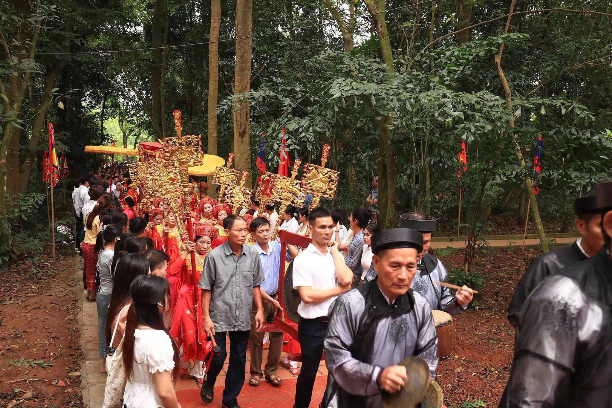
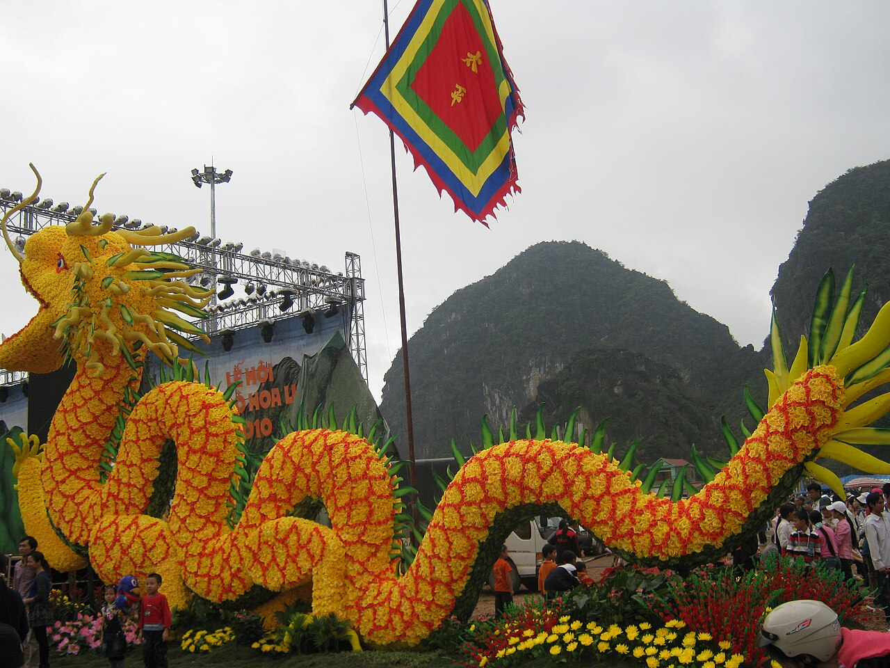

泰山上殿——寮國公主廟
寮國公主廟（亦稱順山廟）供奉名為農花公主的公主。該寺廟位於寧平省泰山住宅群、西和魯區的上寺遺址哈寺山頂上。
此地為古老土地：10世紀時，此地為陳朝（1226年）時期「和魯四鎮」的西門，屬於天泉鎮。在黎朝後期，孫萊屬於清化省天權宮。特別是「順清和漢順（即1402年）第二年，即三月，從大多（即清化）到和洲的道路被修繕重建，直到街道能通行信件，因此被稱為天禮路」[1]
泰山-山來（舊路）位於這條順道路上。
在對抗北方敵人的戰鬥期間，老撾兄弟全心全意團結起來，幫助並支持我們的國家。根據《戴越歷史百科全書》：「...丹茂二年（1471年）（清化七日）......陳寧的地官是金公，他派頭來祭拜並獻祭。春平大陸陸地館是第二個成立的道教協會。當國王抵達順化時，三洲是尼族的宗教，而我是東族的宗教，這個超過一百人的部落帶來了大象來供奉......」
根據當地傳說及現存文獻，Thuong寺廟供奉寮國公主為填充花卉。在黎清宗王（綽號洪德，1460-1497）時期，她被父親指派為大越帶來並訓練一群大象。大象交接時，公主在回程途中生病了。跟隨她的士兵必須在聖殿山和達姆山搭建營地並建造兩座防禦工事，以照顧她的醫療。經過一段時間的治療後，公主由太監悉心照料，但病情未見改善，最終在聖殿山營地去世。使者向大越朝廷報告，黎清宗派兵前來主持儀式，將他葬於寺山區，並在那裡建造陵墓並建立公主廟。之後，國王派人前往寮國報告消息。寮國宮廷立即在木板上雕刻公主的照片，帶到她去世的地方，作為探訪，也紀念越南與寮國之間的團結。這個傳說與當時的歷史非常契合。
黃泰山寺位於寺山頂，座落於寧靜的村莊中央，周圍環繞著壯麗的山脈與丘陵：西邊是公主陵墓，南邊是河宮山，東邊是莫芳山，北邊是春嘉山。朝南的寺廟建於豪樂王朝，歷經多次修復，目前由三棟建築組成，中殿與後宮仍保留「前後前後」的建築風格，屋頂鋪瓦，門口以旋轉腳部設計，鑰匙，木製門階高30公分。由4根女性柱和12根軍柱組成的鐵木系統支撐，
花龍木雕刻、板上的葉片圖案，以及第一句話至今仍是阮朝的原創。
此外，聖物還保存有一座雕刻公主像的祭壇及許多珍貴的祭品，尤其是阮朝的第四項聖令，包括杜德六年（1852年）1月12日的受戒，授予這位美麗女士「林光輝坤坤欽欽仁義神」的稱號。她於啟定年9月25日（1924年）受戒，並被任命為至高神。
在反抗法國殖民和美國帝國主義的抵抗戰爭期間，順寺成為製造戰場武器的場所，駐紮於第三軍區軍事學校，寧平省軍經濟部的作業地點，以及派遣泰山子女赴南方戰場的重點地點。[2]
通廟與哈廟節由地方政府與民眾於公主逝世日（農曆三分之三）舉行。當天，村民們聚集進行祭祀，女性獻祭隊伍在通廟舉行，儀式結束後，人們會舉辦蘭翁舞（寮族的典型舞蹈）以供奉神明。這種表演形式由村民長期維持，帶有許多獨特的細節，村裡有大量居民參與。近年來，在寮國朋友的幫助下，歌舞的服飾與形式越來越完善。此外，還有帶有民族認同的遊戲，如鞦韆、西洋棋、拔河、蝦築巢和歌舞。

